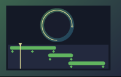

Motion Design
 | You can use different animation techniques for different purposes. Qt Design Studio supports common motion design techniques, such as timeline and keyframe based animation and easing curves, as well as screen-to-screen or state-to-state application flows and data-driven UI logic animation. |
- Introduction to Animation Techniques
Learn more about which animation techniques are supported by Qt Design Studio and the use cases they are most suitable for.
- Creating Timeline Animations
You can use a timeline and keyframe based editor in the Timeline view to animate the properties of UI components. Animating properties enables their values to move through intermediate values at specified keyframes instead of immediately changing to the target value.
- Editing Easing Curves
Specify easing curves for nonlinear interpolation between keyframes in timeline animations, as well as between original and new property values in property animations and between transitions.
- Production Quality
After the wireframing and prototyping phases, you can use previewing and profiling tools to fine-tune your UI for production.
- Optimizing Designs
You can test your UIs on the target devices to make sure you get the best performance out of your animations. To solve performance problems, you typically need to optimize the graphical assets used in the UI, such as images, effects, or 3D scenes.